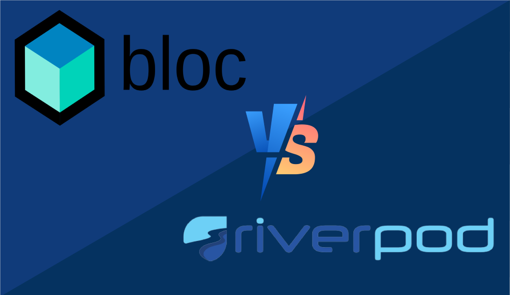

Riverpod vs Provider vs BLoC: The Ultimate 2026 Showdown

Choosing a state management solution in Flutter is often compared to a religious war. Everyone has their favorite, and everyone claims theirs is the "right" way. However, at Sarankar Developers, we take a pragmatic approach. The "best" tool depends entirely on your project's complexity, team size, and long-term maintenance goals.
Whether you're migrating an old app or starting a fresh one in 2026, here is the definitive comparison between the big three: Provider, Riverpod, and BLoC.
1. Provider: The Legacy Powerhouse
Provider was once the de-facto standard. It's essentially a wrapper around InheritedWidget. While
many claim it's "deprecated" in favor of Riverpod, it is still very much alive and used in millions of
apps.
When to use it:
- Small to medium projects where you want minimal abstraction.
- Teams where developers are already highly proficient with the widget tree context.
- When simple dependency injection is all you need.
The Catch: Provider is bound to the widget tree. If you try to access data outside a build
context (like in a background worker or a deep utility class), you will run into the dreaded
ProviderNotFoundException.
2. Riverpod: The Modern Standard
Created by Remi Rousselet (the same creator of Provider), Riverpod is a complete rewrite that addresses every flaw in Provider. It moves state outside the widget tree, making it accessible from anywhere.
When to use it:
- Almost any new project starting in 2026.
- Projects that require heavy unit testing of business logic without mocking the widget tree.
- When you need "safe" asynchronous data fetching using
FutureProviderorStreamProvider.
The Catch: Riverpod has moved toward Code Generation (using
riverpod_generator). While this makes the code much cleaner and less error-prone, it adds a
build step that some developers find frustrating.
3. BLoC: For the Enterprise
BLoC (Business Logic Component) isn't just a package; it's an architecture. It relies on Streams and Sinks. It enforces a strict "One-Way Data Flow." Events go in, States come out.
When to use it:
- Large-scale enterprise applications with multi-year lifespans.
- Teams with 10+ developers where strict structural discipline is required to prevent "spaghetti code."
- When you need a 100% predictable state machine.
The Catch: Boilerplate. To create a simple counter, you need an Event file, a
State file, and a Bloc file. It is the heaviest of the three options.
Comparison Table
| Feature | Provider | Riverpod | BLoC |
|---|---|---|---|
| Learning Curve | Easy | Medium | Hard |
| Boilerplate | Low | Medium | High |
| Outside Context | ❌ No | ✅ Yes | ✅ Yes |
| Testability | Medium | High | Very High |
Internal Linking & Context
Understanding state management is only one piece of the puzzle. To build a truly robust app, you must also consider Clean Architecture principles and ensure your app is optimized for performance. If you're building for monetization, the way you manage state can even affect how you handle ad transitions.
Final Verdict
If you're starting today, go with Riverpod. It's the most flexible and future-proof tool we use at Sarankar Developers. Use BLoC only if your team specifically requests a strict event-driven architecture.
Scaling your Flutter app?
We help businesses choose the right stack and refactor complex codebases for performance. Contact us at pratham@sarankar.com.